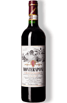
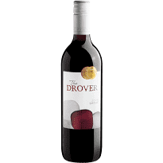
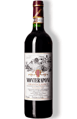
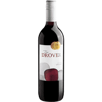

|  |  |  |
 |
|---|---|---|---|
| Preço: R$ 465,50 | Preço: R$ 465,50 | Preço: R$ 519,90 | Preço: R$ 61,20 |
|  |  | |
|
|---|---|---|---|
| Preço: R$ 465,50 | Preço: R$ 465,50 | Preço: R$ 519,90 | Preço: R$ 61,20 |
Aqui você encontrará uma seleção cuidadosamente selecionada de Chiantis de alta qualidade, produzidos na região da Toscana, na Itália. Nossos Chiantis são feitos a partir de uvas locais, principalmente Sangiovese, e são conhecidos por seus sabores secos e de taninos firmes, com notas de frutas vermelhas como cereja e framboesa. Nós garantimos a qualidade e a autenticidade de nossos produtos, e estamos sempre disponíveis para ajudá-lo a escolher o vinho perfeito para acompanhar sua refeição ou ocasião especial. Venha visitar-nos e experimente o melhor do Chianti italiano!
Preço: R$ 465,50
Oferecemos uma ampla variedade de vinhos Syrah da Austrália, França, Chile, África do Sul e muito mais. Nossos vinhos são cuidadosamente selecionados para garantir a mais alta qualidade e o melhor sabor. Descubra os sabores intensos de frutas escuras, notas apimentadas e sabores tostados que tornam os vinhos Syrah tão especiais. Nossa equipe de especialistas em vinhos está sempre disponível para ajudá-lo a escolher o vinho perfeito para cada ocasião. Entregamos em todo o país para que você possa desfrutar de nossos vinhos excepcionais no conforto da sua casa. Não espere mais, experimente um dos nossos vinhos Syrah hoje mesmo!
Preço: R$ 225,00
Aqui, você encontrará uma ampla seleção de vinhos Malbec argentinos, conhecidos por sua riqueza e intensidade. Nossos vinhos Malbec são feitos a partir das uvas mais finas e são envelhecidos em barris de carvalho para um sabor tostado e de baunilha. Com notas de frutas escuras, como amora e cereja, e um sabor aveludado, nossos vinhos Malbec são perfeitos para acompanhar suas refeições ou simplesmente para apreciar sozinho. Nossa equipe de sommeliers está pronta para ajudá-lo a escolher o vinho Malbec perfeito para sua ocasião, então não hesite em perguntar! Venha nos visitar e experimente o sabor único dos vinhos Malbec argentinos
Preço: R$ 519,90
O Vinho Verde é um vinho branco fresco e leve, originário do noroeste de Portugal. É perfeito para ser desfrutado em um dia quente de verão, com seu sabor cítrico e acidez refrescante. Nós nos orgulhamos de oferecer uma ampla seleção de Vinho Verde de alta qualidade, produzido pelos melhores produtores de vinho de Portugal. Nossa equipe está sempre à disposição para ajudá-lo a escolher o vinho perfeito para cada ocasião, desde um jantar casual até um evento especial. Venha nos visitar e experimente o delicioso Vinho Verde em nossa loja hoje mesmo!
Preço: R$ 61,20